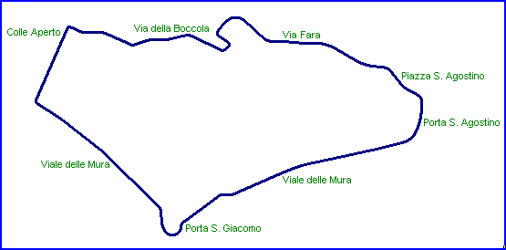

| Length | 1.815 Miles // 2.920 km |
| Direction | Clockwise |
Contact Information |
|
| Address | The circuit is no longer operational |
| Telephone | |
| Website | |
Bergamo
Grand Prix Street Circuit (1935)

| Length | 1.815 Miles // 2.920 km |
| Direction | Clockwise |
Contact Information |
|
| Address | The circuit is no longer operational |
| Telephone | |
| Website | |
Lasted Updated: 05 October 2004 20:57:53 GMT Daylight Time